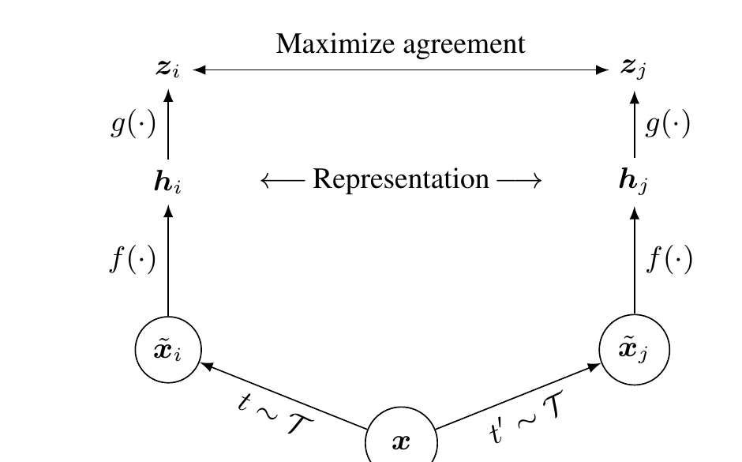

On this page
You know me, I am gonna talk about learning without labels now! How do you teach a model when you have no labels and labeling would cost you a fortune?
Think about it. You can download a million images from the internet in an afternoon. Labeling them takes months and an army of annotators. Labels are expensive. Structure is free. The world has structure baked in, so SSL says: stop begging for labels, the data itself can be the teacher.
The trick is simple. Take one image, make two different distorted copies of it. Teach the model that these two copies are the same thing. That is the whole game. If the model can recognize that a cropped, recolored, blurry photo of a dog is still the same dog, it must have learned something real about dogs. No labels involved.
This tutorial covers the contrastive family: SimCLR, MoCo which fixes SimCLR's batch-size hunger with a queue, and BYOL which pulls off contrastive learning without any negatives at all.
Contrastive learning lives in the embedding space. You take two augmented views of the same image, that is a positive pair. Every other image in the batch is a negative. The training signal says: drag the positive pair together, shove everything else apart.
Here is the mental picture. Imagine every image is a point on the surface of a ball. Two views of the same photo should sit right next to each other. Different photos should spread out. After training, photos of similar things end up clustered together on that ball, and you never once showed the model a label.
Enough geometry. Here is the actual mechanism, live. Below is a toy embedding disk. The blue dot is one photo of a cat, the anchor. The green dot is an augmented twin of that same photo. The red dots are twelve random other photos. Drag the training slider and watch what the loss does: the twin gets pulled toward the anchor, the strangers get shoved out to fill the disk, and the loss falls as the twin becomes the anchor's nearest neighbor.
This is the whole contrastive mechanism with no formula required. The loss trail draws itself step by step behind the red marker: it falls as the twin is dragged toward the anchor and the strangers are shoved away, and the top-1 check flips to yes once the twin is the anchor's nearest neighbor. Every point lives on this disk because embeddings are L2 normalized, so similarity is just cosine similarity and the model cannot cheat by making vectors huge.
SimCLR is the "of course" version of this idea. Take a batch of $N$ images. Make two augmented views of each. That gives you $2N$ views. For each view, exactly one of the other $2N-1$ views is its positive pair. The rest are negatives. Ask the model to pick the positive out of the crowd. It is stupid easy and gives you a fast win.
The augmentations do the heavy lifting. Random crop, flip, color jitter, blur. The model cannot match the views by pixel statistics because the augmentations destroy those, so it has to learn actual content. Weak augmentations, weak features. Remember that.
The augmentations do the heavy lifting, so let me make that concrete. Below is a toy image, and the slider controls how violently I distort it: random crop, rotation, color jitter, all scaled by the slider. Two fresh views pop out side by side with their cosine similarity underneath. At 0% the views are identical and the task is trivial. Crank it up and watch the views stop resembling each other. That is the exact tradeoff the whole method lives or dies on.
The positive pair is a promise: "these two are the same thing." Weak distortion keeps the promise but teaches nothing, because matching pixels is enough. Strong distortion forces the model to learn real content, until the promise breaks and the views are strangers wearing the same nametag. Designing that middle ground for your own data is the job.
SimCLR also adds a small projection head on top of the encoder: two linear layers with a ReLU. Here is the funny part. You train the contrastive loss on the projection output, then you throw the head away and use the encoder output for downstream tasks. The head is a sacrificial layer. It absorbs the contrastive objective so the encoder stays general. Do not skip it, it buys a few points for free.
class ProjectionHead(nn.Module):
def __init__(self, in_dim, hidden_dim=2048, out_dim=128):
super().__init__()
self.net = nn.Sequential(
nn.Linear(in_dim, hidden_dim),
nn.ReLU(),
nn.Linear(hidden_dim, out_dim),
)
def forward(self, x):
return self.net(x) # trained with contrastive loss, discarded afterSimCLR's loss is called NT-Xent: normalized temperature-scaled cross entropy. Fancy name, simple idea. For a positive pair $(i, j)$, the loss is:
Let me read it out loud. $z_i$ and $z_j$ are the two projected views of the same image. $\text{sim}$ is cosine similarity, a number between -1 and 1. $\tau$ is the temperature, a knob that sharpens or softens the softmax, usually set to 0.5.
The numerator says: how similar is my view to its true partner? The denominator says: how similar is my view to every other view in the batch, including the partner? The loss is the negative log of the fraction. It is just cross entropy where the "correct class" is the positive pair.
Two more terms deserve a proper introduction. The $\tau$ inside the $\exp$ is the temperature. Divide by a small $\tau$ and the gaps between similarities get amplified: the softmax turns into a spike and the loss obsesses over the single hardest negative. Divide by a large $\tau$ and everything gets squashed toward uniform, so every negative counts about the same. SimCLR sets $\tau = 0.5$, sharp enough to care about hard negatives, soft enough to learn from all of them. You will play with this below.
The $-\log$ outside is the surprise meter. The fraction inside is the model's estimated probability that it picked the right partner: 1.0 means total confidence, near 0 means clueless. Negative log turns that into a loss. Probability 1 gives loss 0, probability 0.02 gives loss around 4. Confident and right, zero penalty. Unsure or wrong, pay up.
The NT-Xent loss taken apart, with the concrete numbers from the example above (batch of 128, 254 negatives, τ = 0.5). Training drags the numerator up and the denominator down until the fraction approaches 1 and the loss approaches 0.
Concrete numbers, one step at a time.
The slider is the temperature now. Watch the softmax bars: at low τ the weight collapses onto the nearest candidates and the loss is decided by the hardest negatives; at high τ the weight spreads across the whole crowd. SimCLR uses τ = 0.5, the useful middle.
Low temperature sharpens the softmax onto the nearest candidates, so the loss obsesses over the hardest negatives and gradients vanish everywhere else. High temperature spreads the weight and every negative gets a vote. SimCLR's τ = 0.5 sits in the useful middle.
One subtle detail in the code: you must exclude self-similarity. Every vector is perfectly similar to itself, similarity 1.0, and that would dominate the softmax. The standard trick is to mask the diagonal of the similarity matrix with a huge negative number before the softmax.
def nt_xent_loss(z1, z2, temperature=0.5):
# z1, z2: [B, D] projected views, already L2 normalized
B = z1.size(0)
z = torch.cat([z1, z2], dim=0) # [2B, D]
sim = torch.mm(z, z.t()) / temperature # [2B, 2B] cosine similarity
# positive of row i is row i+B (and vice versa)
labels = torch.cat([torch.arange(B, 2 * B), torch.arange(B)]).to(z.device)
# kill self-similarity so the diagonal cannot win
sim.fill_diagonal_(-9e15)
return F.cross_entropy(sim, labels)The NT-Xent code above is the loss. But the method is bigger than the loss, so here is the paper's own drawing of the whole thing, with a tour.

Rebuilt from Figure 2 of Chen et al. (ICML 2020). arXiv:2002.05709
Figure 2, verbatim caption: "A simple framework for contrastive learning of visual representations. Two separate data augmentation operators are sampled from the same family of augmentations ($t \sim \mathcal{T}$ and $t' \sim \mathcal{T}$) and applied to each data example to obtain two correlated views. A base encoder network $f(\cdot)$ and a projection head $g(\cdot)$ are trained to maximize agreement using a contrastive loss. After training is completed, we throw away the projection head $g(\cdot)$ and use encoder $f(\cdot)$ and representation $h$ for downstream tasks."
Chen, T., Kornblith, S., Norouzi, M., and Hinton, G. A Simple Framework for Contrastive Learning of Visual Representations. ICML 2020. arXiv:2002.05709. https://arxiv.org/abs/2002.05709
SimCLR has one embarrassing requirement: it needs a huge batch size. Negatives come from the current batch, so with a batch of 256 you only get 510 negatives, and the learning signal is weak. The SimCLR paper used a batch of 4096. That is eight GPUs minimum. Most of us do not have that.
MoCo fixes this with a queue. Instead of taking negatives from the current batch, it keeps a queue of a few thousand embeddings from past batches. Batch size of 256, queue of 4096, you get the best of both worlds.
But there is a catch. Embeddings from ten batches ago were made by an older encoder, so they are stale. MoCo's answer is a second encoder for the keys, updated with a slow exponential moving average of the query encoder:
$m$ is the momentum, 0.999 in practice. The key encoder $\theta_k$ barely moves each step, so the queued embeddings stay consistent with each other. The query encoder $\theta_q$ learns normally by gradient descent. Three lines of code:
Watch what that number means. Below, one coordinate of the query encoder jumps from 0 to 1 at the first step, and the target chases it with your choice of m. At m = 0.999 the target has barely noticed after 60 steps. That slowness is the entire point: the queued negatives were all computed by nearly the same encoder, so comparing against them is fair.
m = 0.999 means the key encoder absorbs only about 6% of a sudden change after 60 steps. The queue is a rolling memory, and the EMA keeps that memory honest: every embedding in it came from almost the same encoder.
@torch.no_grad()
def momentum_update(query_encoder, key_encoder, m=0.999):
for p_q, p_k in zip(query_encoder.parameters(), key_encoder.parameters()):
p_k.data = m * p_k.data + (1 - m) * p_q.dataThat is the whole trick. A rolling memory of negatives plus a slow encoder that keeps the memory honest.
Okay, here is where it gets weird. BYOL asks: what if we drop the negatives entirely? Just pull the two views together and never push anything apart. Sounds like it should collapse instantly, every image mapping to the same point. It does not. And understanding why is the most interesting part of this tutorial.
BYOL uses two networks. The online network has an encoder, a projector, and a predictor. The target network has just an encoder and a projector. The online network tries to predict the target network's representation of the other view. The target network is never trained by gradients. It is a slow moving average of the online network, updated with the same EMA rule as MoCo. Gradients flow only through the online path.
Forget the boxes and arrows for a second. Here is the phenomenon those boxes exist to prevent, live. Twenty points on the disk, one hundred training steps. The toggle switches between the real BYOL setup (stop-gradient plus predictor) and the naive version where gradients flow everywhere. Try flipping it mid-run: in naive mode the dots drain to a single dot and the COLLAPSED banner flips, in BYOL mode they just keep drifting around the circle.
Without the stop-gradient, zero loss is trivially reachable: map everything to one point and the prediction is always perfect. The loss flatlines at 0.000 and the model has learned nothing. The stop-gradient plus the asymmetric predictor remove that lazy minimum, so the only way down is to actually match views of the same image.
The loss is cosine similarity between the online prediction of one view and the target projection of the other view. Since both are normalized, it simplifies to:
$q$ is the online network's prediction, $z'$ is the target network's projection of the other view. Read it out loud: perfect match, similarity 1, loss is 0. Orthogonal, similarity 0, loss is 2. Opposite, similarity -1, loss is 4. It is just squared distance on the sphere, and it is computed in both directions: view 1 predicts view 2's target, and view 2 predicts view 1's target.
Put your hands on it. The dial below is the angle between the online prediction q and the target z'. Swing it and watch the similarity and the loss move together:
The BYOL loss is just squared Euclidean distance between two unit vectors: |q - z'|^2 = 2 - 2·sim. Zero when they agree, 4 when they point opposite. No negatives needed for the loss to make sense; the collapse toy above shows why the machinery around it matters.
Now the real question. Why does this not collapse? If there are no negatives, why does the model not just output the same vector for everything and get zero loss? Three things conspire to stop it.
Here is one BYOL training step, the whole thing:
def byol_step(x1, x2, online, target, m=0.99):
# online path: encoder -> projector -> predictor (gets gradients)
q1 = online.predictor(online.projector(online.encoder(x1)))
q2 = online.predictor(online.projector(online.encoder(x2)))
with torch.no_grad(): # target path: frozen, no gradients
z1 = target.projector(target.encoder(x1))
z2 = target.projector(target.encoder(x2))
# symmetric loss: q1 predicts z2, q2 predicts z1
loss = 2 - 2 * (F.cosine_similarity(q1, z2).mean()
+ F.cosine_similarity(q2, z1).mean()) / 2
loss.backward() # only online weights move
with torch.no_grad(): # then the target slowly follows
for p_o, p_t in zip(online.parameters(), target.parameters()):
p_t.data = m * p_t.data + (1 - m) * p_o.data
return lossNotice what is missing. No negatives, no queue, no giant batch requirement. BYOL works fine at batch size 256. That alone makes it the practical choice when you do not have a GPU cluster.
So what do you actually get? The standard way to measure this is linear evaluation: freeze the pretrained encoder, train only a linear classifier on top with real labels, and report ImageNet top-1 accuracy. Here are the numbers from the original papers, ResNet-50 on ImageNet, trained 1000 epochs:
| Method | ImageNet top-1 |
|---|---|
| Supervised baseline (for reference) | 76.5% |
| SimCLR (batch 4096) | 69.3% |
| BYOL (batch 4096) | 74.3% |
Read that again. BYOL with zero labels gets to 74.3%, about two points shy of fully supervised training at 76.5%. That is the headline result. The model learned almost everything it needed from the structure of the data alone. The linear probe just names the clusters.
And these features transfer. Take a BYOL encoder pretrained on ImageNet, fine-tune it on 1% of the labels, and it beats a supervised model trained from scratch on that same 1%. That is the actual use case: pretrain on your mountain of unlabeled data, label a thimbleful, fine-tune.
Augmentations are the method. This is the part people underestimate. SimCLR and BYOL do not learn from the images, they learn from the difference between the two views. If your augmentations are too weak, the task is trivial and the features are garbage. If they are too strong, the views stop being the same thing and the model learns noise. For natural images the standard recipe is random crop plus color jitter plus blur. For your own data, say sensor signals or spectrograms, you have to design augmentations that preserve identity. There is no universal recipe. This is where most failed SSL projects actually fail.
SimCLR is hungry for batch size. With 256 negatives the signal is thin. The paper used 4096. If you cannot afford that, use MoCo's queue or switch to BYOL, which does not care about batch size. Do not run SimCLR with batch 64 and wonder why it does nothing.
Temperature is not a detail. Too low and the softmax becomes a spike, gradients vanish except on the hardest negatives. Too high and everything looks the same, no learning signal. SimCLR uses 0.5, MoCo uses 0.07 to 0.2. Tune it, it matters more than most architecture choices.
Be honest about the evaluation protocol. Linear probe freezes the encoder and trains one linear layer. Fine-tuning trains everything. Semi-supervised fine-tuning on 1% of labels is yet another number. Papers report the most flattering one. When you compare methods, compare the same protocol, or you are comparing apples to orangutans.
SSL is not magic on small data. These methods shine when you have far more unlabeled data than labeled data. If you only have 10k images total, just label them and train supervised. The pretraining overhead is not worth it.
You now have a feature extractor that learned from nothing but structure. The natural next step is to squeeze those features into a smaller model for deployment. That is knowledge distillation: a big teacher model, in this case your SSL-pretrained encoder, teaching a small student to mimic its representations. Same idea as here, matching vectors on a sphere, but now the goal is compression instead of learning from scratch.